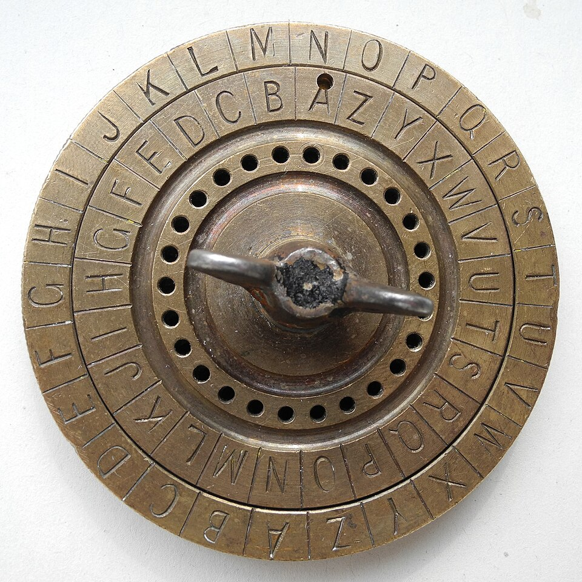
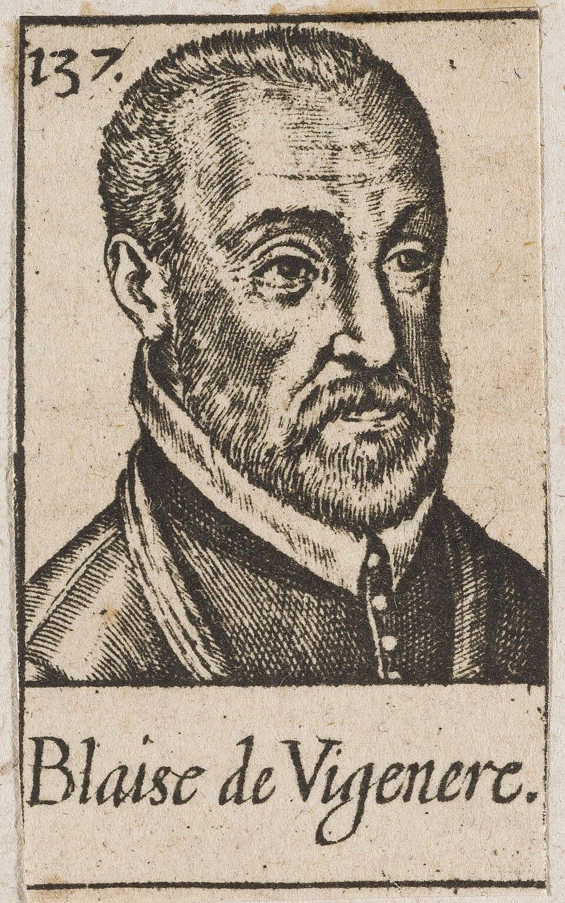
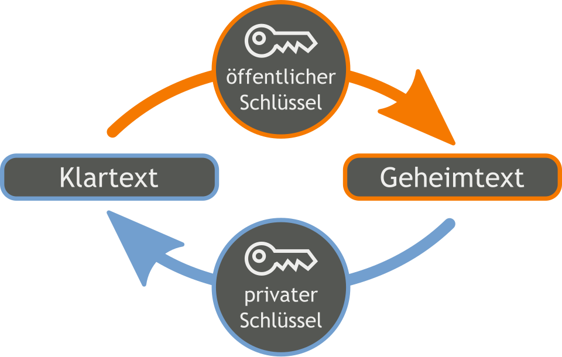

Pixabay
Pixabay
Good morning!
Nur das Schöne wird die Welt retten!
Fjodor Dostojewski
Nicht verzagen, Doc Alvers fragen!
Informatik — Grundkurs 11
Geheimschriften
Von Caesar über Vigenère bis zur verschlüsselten E-Mail
Nicht verzagen, Doc Alvers fragen!
Kapitel 01
Caesar
Verschieben und knacken

Nicht verzagen, Doc Alvers fragen!
Wo wir stehen
Letzte Woche: vertrauenswürdige Software — Signaturen und Prüfsummen tauchten schon auf
Heute das Werkzeug dahinter: die Kryptologie
Kryptografie entwirft Verfahren, Kryptoanalyse versucht sie zu brechen — zusammen heißt das Kryptologie
Leitfrage: Wie sicher ist eine Geheimschrift — und wie schreibe ich eine Mail, die nur der Empfänger lesen kann?
Nicht verzagen, Doc Alvers fragen!
Die Caesar-Chiffre
Jeder Buchstabe wird um dieselbe Zahl im Alphabet verschoben — ist der Schlüssel
Nach Z geht es wieder bei A weiter
Als Formel, mit A = 0 bis Z = 25:
Entschlüsseln heißt: um zurückschieben
Julius Caesar soll mit geschrieben haben
Nicht verzagen, Doc Alvers fragen!
HALLO mit dem Schlüssel 3
| Klartext | H | A | L | L | O |
|---|---|---|---|---|---|
| Schlüssel | +3 | +3 | +3 | +3 | +3 |
| Geheimtext | K | D | O | O | R |
H wird zu K, A zu D, L zu O, O zu R
Doppelte Buchstaben bleiben doppelt: LL wird zu OO
Ergebnis: KDOOR
Nicht verzagen, Doc Alvers fragen!
Warum Caesar leicht zu brechen ist
Es gibt 26 Verschiebungen — die Verschiebung 0 ändert nichts, also nur 25 brauchbare Schlüssel
Alle durchzuprobieren dauert schon von Hand nur Minuten
Noch schneller geht es mit der Häufigkeitsanalyse
Sie beruht darauf, dass Buchstaben in einer Sprache unterschiedlich oft vorkommen
Nicht verzagen, Doc Alvers fragen!
Die Häufigkeitsanalyse
| Buchstabe | E | N | I | S | R |
|---|---|---|---|---|---|
| Anteil im Deutschen | 17 % | 10 % | 8 % | 7 % | 7 % |
Das E ist mit Abstand am häufigsten, dann folgen N und I (Werte gerundet)
Bei Caesar überträgt sich diese Verteilung unverändert in den Geheimtext
Der häufigste Geheimbuchstabe ist also sehr wahrscheinlich das E
Beispiel: Ist im Geheimtext H am häufigsten, dann ist
Nicht verzagen, Doc Alvers fragen!
Kapitel 02
Vigenère
Viele Verschiebungen statt einer

Nicht verzagen, Doc Alvers fragen!
Die Vigenère-Chiffre
Ein Schlüsselwort wird immer wieder über den Klartext gelegt
Jeder Buchstabe des Schlüsselworts gibt eine eigene Verschiebung: A = 0, B = 1, C = 2 und so weiter
Derselbe Klartextbuchstabe wird so zu verschiedenen Geheimbuchstaben
Damit verwischt die einfache Häufigkeitsverteilung
Nicht verzagen, Doc Alvers fragen!
GEHEIM mit dem Schlüsselwort ROT
| Klartext | G | E | H | E | I | M |
|---|---|---|---|---|---|---|
| Schlüssel | R | O | T | R | O | T |
| Verschiebung | 17 | 14 | 19 | 17 | 14 | 19 |
| Geheimtext | X | S | A | V | W | F |
Das doppelte E wird einmal zu S, einmal zu V — die Häufigkeiten verwischen
Kleines Beispiel wie auf dem Blatt: AB mit dem Schlüssel BA ergibt BB
Nicht verzagen, Doc Alvers fragen!
Warum Vigenère trotzdem fällt
Das Schlüsselwort wiederholt sich
Wiederholte Textstellen ergeben dann oft wiederholte Geheimstellen
Aus deren Abständen folgt die Schlüssellänge — das zeigte Friedrich Kasiski 1863
Danach zerfällt der Text in mehrere Caesar-Chiffren — und jede fällt durch Häufigkeitsanalyse
Nicht verzagen, Doc Alvers fragen!
Das One-Time-Pad
Der Schlüssel ist zufällig, so lang wie der Text und wird nur einmal verwendet
Dann ist das Verfahren beweisbar sicher: Der Geheimtext verrät nichts über den Klartext
Praktisch scheitert es am Austausch der langen Schlüssel und an der Einmaligkeit
Vigenère mit einem zufälligen Einmal-Schlüssel in Textlänge — das ist genau das One-Time-Pad
Nicht verzagen, Doc Alvers fragen!
Kapitel 03
Gute Verfahren
Kerckhoffs und die Schlüssellänge

Nicht verzagen, Doc Alvers fragen!
Das Kerckhoffssche Prinzip
Die Sicherheit muss allein auf dem Schlüssel beruhen — nicht auf der Geheimhaltung des Verfahrens
Verfahren werden früher oder später bekannt, Schlüssel lassen sich wechseln
Offene Verfahren können von vielen geprüft werden
Security by Obscurity — Sicherheit durch Verschleierung — bricht zusammen, sobald das Verfahren bekannt wird
Formuliert hat das Auguste Kerckhoffs 1883
Nicht verzagen, Doc Alvers fragen!
Die Schlüssellänge
Jedes zusätzliche Bit verdoppelt die Zahl der möglichen Schlüssel
Caesar hat 25 Schlüssel — moderne Verfahren wie AES haben und mehr
ist eine Zahl mit 39 Stellen: Alle durchzuprobieren ist praktisch aussichtslos
Zu kurze Schlüssel entwerten auch ein gutes Verfahren
Verfahren nie selbst erfinden — nur jahrelange öffentliche Prüfung deckt Schwächen auf
Nicht verzagen, Doc Alvers fragen!
Kapitel 04
Schlüsselpaare
Asymmetrisch verschlüsseln, E-Mails schützen

Nicht verzagen, Doc Alvers fragen!
Symmetrisch und asymmetrisch
Symmetrisch
ein gemeinsamer Schlüssel zum Ver- und Entschlüsseln
sehr schnell
Problem: Der Schlüssel muss sicher ausgetauscht werden
Beispiele: Caesar, Vigenère, AES
Asymmetrisch
ein Schlüsselpaar: öffentlich und privat
den öffentlichen Schlüssel darf jeder kennen
entschlüsseln kann nur, wer den privaten hat
langsamer — Beispiel: RSA
Nicht verzagen, Doc Alvers fragen!
Wer benutzt welchen Schlüssel?
| Ziel | der Absender nimmt | der Empfänger nimmt |
|---|---|---|
| verschlüsseln | den öffentlichen Schlüssel des Empfängers | seinen eigenen privaten Schlüssel |
| signieren | seinen eigenen privaten Schlüssel | den öffentlichen Schlüssel des Absenders |
Die Signatur weist Absender und Unverändertheit nach — die Mail bleibt aber lesbar
Für Vertraulichkeit muss zusätzlich verschlüsselt werden
Hybride Verfahren: Ein symmetrischer Sitzungsschlüssel wird asymmetrisch übertragen — so arbeitet TLS
Nicht verzagen, Doc Alvers fragen!
E-Mail-Verschlüsselung in der Praxis
Transportverschlüsselung schützt den Weg zwischen den Servern — auf den Servern liegt die Mail im Klartext
Ende-zu-Ende: Nur Absender und Empfänger können die Nachricht lesen
OpenPGP nutzt ein Web of Trust: Nutzer beglaubigen gegenseitig ihre Schlüssel
S/MIME setzt dagegen auf zentrale Zertifizierungsstellen
Selten genutzt, weil Einrichtung und Schlüsselaustausch vielen zu aufwendig sind — Messenger erledigen das automatisch
Nicht verzagen, Doc Alvers fragen!
Caesar und Vigenère fallen durch Häufigkeiten und Wiederholungen. Sicher ist ein offenes, geprüftes Verfahren mit langem Schlüssel — verschlüsselt wird mit dem öffentlichen Schlüssel des Empfängers, signiert mit dem eigenen privaten.
Merksatz
Nicht verzagen, Doc Alvers fragen!
Fun Facts
Die Vigenère-Chiffre beschrieb zuerst Giovan Battista Bellaso 1553 — Vigenère wurde sie erst später zugeschrieben
Rund 300 Jahre galt sie als unknackbar: „le chiffre indéchiffrable“
ROT13 ist Caesar mit : Zweimal angewendet ergibt sich wieder der Klartext
Die Enigma wurde im Zweiten Weltkrieg gebrochen — mit Vorarbeit polnischer Mathematiker um Marian Rejewski
Nicht verzagen, Doc Alvers fragen!
Eure Aufgabe
Unplugged: Chiffrierscheibe basteln und einen Caesar-Text per Häufigkeitsanalyse knacken
CrypTool: mit Vigenère verschlüsseln und die Schlüssellänge bestimmen lassen
Live-Demo: Schlüsselpaar erzeugen, eine Mail signieren und verschlüsseln — was sieht der Empfänger?
Zum Schluss: Aufgaben (20) auf der Planseite — Lösung pro Aufgabe zum Aufklappen
Nicht verzagen, Doc Alvers fragen!